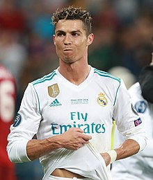
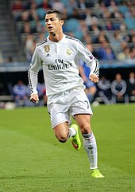
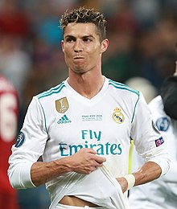
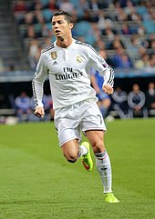

The Peak
 



Ahead of the 2009–10 season, Ronaldo joined Real Madrid for a world record transfer fee at the time of £80 million (€94 million).[126] His contract, which ran until 2015, was worth €11 million per year and contained a €1 billion buy-out clause.[127] At least 80,000 fans attended his presentation at the Santiago Bernabéu, surpassing the 25-year record of 75,000 fans who had welcomed Diego Maradona at Napoli.[128] Since club captain Raúl already wore the number 7 (the number Ronaldo wore at United), Ronaldo received the number 9 shirt,[129] which was presented to him by former Madrid player Alfredo Di Stéfano.